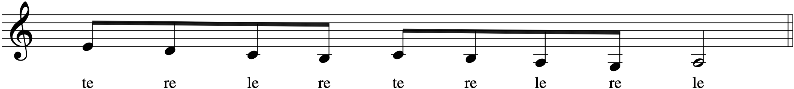
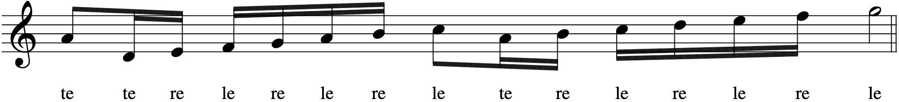
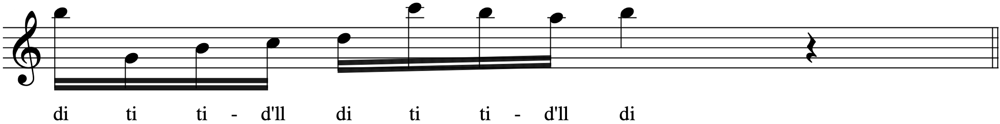

Download (PDF)Version française
This article is dedicated to the public domain
Girolamo dalla Casa. Il vero modo di diminuir. 2 Vols. Venetia: Angelo Gardano, 1584, p. 1.
Francesco Rognioni. Selva di varii passaggi secondo l'uso moderno per cantare & suonare con ogni sorte de stromenti... Milano: Filippo Lomazzo, 1620, in Parte seconda, p. 5, Modo di Dar la lingua al Corneto o altro instrumento di fiato.
Johann Joachim Quantz. Versuch einer Anweisung die Flöte traversière zu spielen. Berlin, Friedrich Voss, 1752, p. 2.
It is essential to erase from our minds the idea that legato, as we know it today, was a standard technique in earlier centuries. The concept is essentially from the 19th century, and is realized fully in the organ method of Jacques Lemmens (1823-1881; Ecole d'Orgue, Mainz, 1862). During his keyboard performance practice workshops, Harald Vogel observed that a large part of organ music is stylistically similar to sacred choral music. Scrutinizing vocal music demonstrates that--except for melismas (and prominent breathing spots), there are subtle breaks in the sound produced by the consonants. Moreover, there is essentially no difference between the treatment of repeated notes concerning conjunct and disjunct notes. It is, therefore, a standard performance concept seen in most early treatises--a sound that is very close to legato, but separated by little articulations. The easiest way to experiment with this type of sound is to play repeated notes while changing fingers each time on the same key, or to play conjunct notes with the same finger, ensuring that there is the least possible break in the sound in both cases:
Opposed to the legato as well as the staccato is the ordinary procedure [touch], where one releases the finger from the previous key an instant before one plays the next. Since it is always assumed, this ordinary procedure is never indicated.
Sowohl dem schleiffen als Abstossen ist das ordentliche Fortgehen entgegen gesetzet, welches darinnen besteht, daß man ganz hurtig kurz vorher, ehe man die folgende Note berühret, den Finger von der vorhergehenden Taste aufhebet. Dieses ordentliche Fortgehen wird, weil es allezeit vorausgesetzet wird, niemahls angezeiget.
(Friedrich Wilhelm Marpurg, Anleitung zum Clavierspielen, Berlin, A. Haude & J.C. Spener, 1755, p. 29.)
Throughout the ages, the instrumental music of each epoch has also influenced its keyboard music. Thus, we find parity between keyboard and, for example, string figuration. Similarly, keyboard music was equally influential on other instrumental writing. Also, consider vocal music, which, in France, had a specific effect on ornamentation, for example, Bertrand de Bacilly's discussion of the port de voix, coulement, or the doublement de gosier. We must not overlook the fact that most ornamentation is based on vocal models. It is logical to examine such instrumental music to discover how it was played. Extant instrumental treatises of the Renaissance and Baroque indicate that, unless slurs were employed, each note had its own articulation produced by tonguings, bowings, or pluckings. These articulations were often varied, giving the notes increased or diminished emphasis. In addition, these strong and weak articulations were usually alternated, especially in the Renaissance, thus producung groups of two notes. Look at the three examples taken from wind instrument treatises above.
These pairs correspond precisely with the sound effect obtained when contemporaneous keyboard fingerings are used, though the fingering produces the articulation. Thus, for keyboardists, historical fingerings represent contemporary tonguings, bowings, and pluckings.
Early fingerings were used on all the extant keyboard instruments: clavichord, harpsichord, virginal, spinet, regal, portative, positive, and organ. These early instruments generally had relatively short keys with a shallow key dip facilitating such fingering. Moreover, early music was modal for a large part and, consequently, played principally on the "white" keys (formerly called "natural" keys), except in the case of musica ficta, where E b, F#, G#, and C# are often used (if we consider that B b is part of the hexachord), but of course, not at the same time in the sense that they are found in B minor for example.
Articulations were produced by the same finger on consecutive notes, using the fingers in pairs or groups of three or four notes, and moving the hand directly to the next position.
Today, we speak in terms of finger independence, though the early virtuosi were against the idea of imposing any drastic changes in the fingers' natural capabilities. They took the fingers as they found them, and delegated to each the tasks for which they were best suited.
Thumb-under technique is not clearly defined in the early sources. However, in a later source, Michel Corrette alludes to it in Les Amusemens du Parnasse, Paris, chez l'Auteur, 1749, p. E:
With the left hand ascending you pass the 4th finger over the thumb, and descending you pass the thumb under the 4th finger. With the right hand ascending, you must pass the thumb under the 4th finger, and descending, you pass the 4th finger over the thumb.
Concerning the middle-finger and index-over technique, we find in Luys Venegas de Henestrosa's Libro de cifra nueva para tecla, Arpa y Vihuela (Alcalá 1557), several fingerings for scales. He explicitly requires the performer to pass the third finger over the thumb. We also find numerous examples of 2-1 fingering in the left hand, and Tomás de Sancta María's Libro llamado Arte de tañer fantasía (Valladolid, 1565) specifies that the second finger is raised higher than the thumb each time it has struck a note, while the thumb "appears to drag over the keys."
Substitution is not a part of early techniques, although Correa de Arauxo provides an example in Facultad Orgánica (Alcalá, 1626). In later sources, we find a plethora of substitutions in L'Art de toucher le clavecin (Paris 1716/17), by François Couperin; two substitutions in Michel Corrette's Les Amusemens du Parnasse (Paris 1749, pp. 6 et 15); and one substitution in J.S. Bach's Praeludium et Fuguetta in C Major (BWV 870a, mesure 42), but none is sure whether or not the fingering emanates from the composer.
Chordal passages were played in a slightly detached manner.
Here are a few general principles for their fingering taken from 16th and 17th-century sources:
1. The three middle fingers (2, 3, 4) are used the most often, the thumb occasionally, and the 5th rarely.
1. The 2nd and 4th fingers were considered "good" fingers and were often placed on "good" notes (those which fell on metrically strong beats). In the 17th century, the 1st and 3rd fingers were often considered "good", and the rules were ignored.
2. For ascending right hand passages, 2, 3, 4, 3, 4 were used; in descending passages, 4, 3, 2, 3, 2.
3. For descending left hand passages, 2, 3, 4, 3, 4 were used; when ascending, 4, 3, 2, 3, 2.
4. The thumb was used in the right hand, but more often in the left, especially in ascending passages: 2, 1, 2, 1. Here, the index may pass over the thumb (index-over technique).
Maria Boxall says, in her Harpsichord Method, Mainz, B. Schott's Söhne, 1977, p. 34, "Although the sixteenth-century virtuosi and some later eighteenth-century players employed a different technique for very fast runs, this was, during the sixteenth century, virtually a trade secret." She does not cite her sources, however, we have found information indicating that it was a tradition:
It also confirms to a great degree that the tradition that the most skillful players used themselves a different fingering, and furthermore withhheld their secret of execution from publication. Whether this assertion be so or not... Music: A Monthly Magazine, Devoted to the Art, Science, Technic and Literature of Music, W.S.B. Mathews, Volume 2, Chicago, May 1892, p. 568. (Link)
This clearly states that it is more a belief than a reality documented by sources. The other excerpts go in the same direction:
We next examine a book published in London in 1700 containing a "Choice collection of Ayres for the Harpsichord or Spinett, by Blow, Pigott, Clarke, Barrett, and Crofts." This book gives easy directions for young beginners; very curious directions they are; the right hand fingers are duly marked 1, 2, 3, 4, 5, the thumb being 1; but the same figures are used for the left hand, and then the little finger is marked 1 and the thumb 5. I have not found other instances of this erratic method, but in an old English instruction book for the harpsichord I read a very suggestive note that "the author explains things hitherto kept profoundly secret." The Musical Times and Singing Class Circular, Vol. 31, No. 564, Musical Times Publications Ltd., London, February 1, 1890, p. 79. (Link)
Now in this fingering all the fingers are brought into play, and though it is somewhat clumsy according to modern views, it is less than that of Ammerbach, and as we have no ground for assuming that the English teachers had better principles to guide them than their German neighbours, and it is known moreover, by tradition, that the most skilful players only imparted the secret of their power to favoured pupils, not only at that time but in later years, the assumption is not made without reasonable support. A Dictionary of Musical Terms, John Stainer and W.A. Barrett, 4th edition, London, New York: Novello, Ewer & Co., 1889, p. 167. (Link)
The first examples of fingering date from around 1525 in Germany, but the technique of the German organists, although used by some of the 16th-century Venetian organists, was much less capable of development than that of the Spaniards. As a result, it ended up disappearing in the 17th century.
2. By the mid-16th century, the Spanish keyboardists had developped a technique that anticipated much of what would need to be rediscovered in the 18th century, and that would spread to France, The Netherlands, and Germany. Concerning this technique, all of the Spanish sources use modern finger numbers, and generally make much greater use of the thumb than either the early German or Italian sources. "Sancta María says that in playing ascending and descending passages, 'incline the hands a little toward the running part,' raise the third finger higher than the others and play with it further in on the keys." (Sandra Soderlund, Organ Technique: An Historical Approach, Chapel Hill, North Carolina: Hinshaw Music, Inc., 1980, p. 21.). The Spanish approach became the basis of that used by the English virginalists and their 17th-century successors (though sources of the latter indicate more frequent use of the fifth finger), and François Couperin in the late 17th- and early 18th-century French schools. This technique spread, through Sweelinck in Amsterdam and his North German followers, and even to the music of J.S. Bach two generations later; it also spread through the Neapolitan and Roman Schools to Frescobaldi.
Thus, with only slight changes of detail to suit each decade and national style, this technique was used by almost every great harpsichordist and organist over a period that spanned nearly 300 years before the new visionaries of the fortepiano almost entirely swept it away.
With the emergence of the style galant around the 1730's, a profound change of approach began to appear in the techniques of the upcoming generation of performers. This change was partly connected to the advent of the fortepiano, although this instrument was initially quite naturally treated in a manner hardly different from the harpsichord. According to Carl Czerny (recalling his lessons with his master), Beethoven informed him that, having received his musical training on the harpsichord, Mozart "had accustomed himself to a mode of playing on the claviers then more frequently used, which was in no wise adapted to the fortepiano." Beethoven called Mozart's style of playing "finger dancing", and remarked that "even after Mozart's day, the choppy, short, detached manner of playing was the fashion." (Maria Boxall, Harpsichord Method, Mainz: B. Schott's Söhne, 1977, p. 36.).
Clementi's Introduction to the Art of playing on the Piano Forte (London, 1801 for the first edition) is the method that instituted the style of legato that we are now accustomed to:
The best general rule, is to keep down the keys of the instrument, the FULL LENGTH of every note (Clementi's emphasis). (Muzio Clementi, Clementi's Introduction to the Art of playing on the Piano Forte, London, printed by Clementi, Banger, Hyde, Collard & Davis, 1801, p. 8.).
Clementi also writes something very interesting about legato a little further on:
When the composer leaves the LEGATO and STACCATO to the performer's taste; the best rule is, to adhere chiefly to the LEGATO; reserving the STACCATO to give SPIRIT occasionally to certain passages, and to set off the HIGHER BEAUTIES of the LEGATO. (ibid., p. 9.).
From these co-authors' point of view, this is a very interesting idea, because it is a justification of legato as one of the most powerful means of expression, and around 1800, it is a total break with the "ordinary" procedure of articulating when nothing is specified. One of Clementi's pupils, Ludwig Berger, a German pianist, suggests that his teacher had developed his ideas concerning legato as early as the late 18th century, perhaps even after Mozart's death (1791):
I asked Clementi whether he had, as early as 1781, begun to treat the instrument in his present [1806] style. He answered no, and added that in those early days, he had cultivated a brilliant execution--and that he had subsequently cultivated a more melodic and noble performance style after the manner of famous singers. (Willard A. Palmer, ed., W.A. Mozart An Introduction to his Keyboard Works, Sherman Oaks, California, Alfred Publishing Co., Inc., 1980, p. 9.).
Here, we sense the influence of the bel canto of the late 18th to the mid-19th centuries, with such composers as Rossini, Bellini, Donizetti, and others, which brings us to Chopin, who emanates of them.
A word about the co-authors:
Jon Baxendale is Founder of Lyrebird Music
Pascal Duc is Musical Advisor for Les Arts Florissants
Frank Mento is Professor Emeritus of Harpsichord at the Conservatory of the 18th district in Paris, and Organist Emeritus of Saint-Jean de Montmartre Church, also in Paris. harpsichord-method.com
| Boxall, Maria | Harpsichord Method. Mainz (Germany): B. Schott's Söhne, Ed. 11244, 1977. |
| Clementi, Muzio | Clementi's Introduction to the Art of playing on the Piano Forte. London: printed by Clementi, Banger, Hyde, Collard & Davis, 1801. |
| Corrette, Michel | Les Amusemens du Parnasse. Méthode courte et facile pour apprendre à toucher le clavecin. Restitution: Olivier Baumont. Paris: Editions Henry Lemoine, 1984. |
| Geoffroy-Dechaume, Antoine | Le langage du clavecin. Luynes (France): Editions Van de Velde, 1986. |
| Gleason Harold | Method of Organ Playing. Englewood Cliffs, New Jersey (USA): Prentice-Hall,Inc., 1979. |
| Lemmens Jacques | Ecole d'Orgue. Mainz (Germany): B. Schott's Söhne, 1862. |
| Palmer, Willard A., éd. | W.A. Mozart An Introduction to his Keyboard Works. Sherman Oaks, California (USA): Alfred Publishing Co., Inc., No. 664, 1974. |
| Sanger, David | Play the Organ. Volume Two. Seven Oaks, Kent (Great Britain): Novello and Company Limited, Cat. No. 01-0235, 1993. |
| Soderlund, Sandra | Organ Technique: An Historical Approach. Chapel Hill, North Carolina (USA): Hinshaw Music, Inc., 1980. |
| 10 Nov, 2023 | Original release, proofread by co-authors |
The home URL for reading this article is https://hrpsd.github.io/touch
The repository URL for contributing to this article is https://github.com/hrpsd/touch